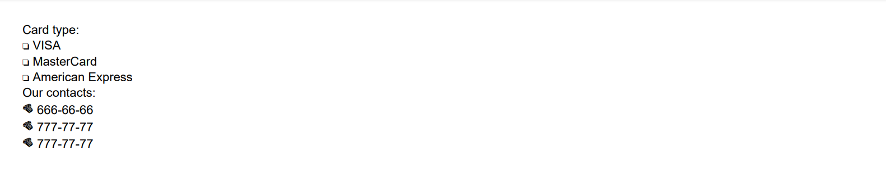

Configuring Font
Brief
The article describes how to configure fonts.
Details
You can configure the font for document sections, paragraphs, a table of content,
and text elements.
The font can be also configured for the content of an entire table, table columns, table rows (content, alternate, header, footer), and table cells.
You can use the following built-in Base14 fonts of PDF that are suitable for all viewer applications: Courier, Courier-Bold, Courier-Oblique, Courier-BoldOblique, Helvetica,
Helvetica-Bold, Helvetica-Oblique, Helvetica-BoldOblique, Times-Roman, Times-Bold, Times-Italic, Times-BoldItalic, Symbol, Zapf Dingbats.
The library also supports the CID fonts for multibyte characters (developed by Adobe). You can use fonts for Simplified Chinese, Traditional Chinese, Japanese,
and Korean. CID fonts require particular encodings that can be specified using the method FontBuilder.SetEncodingName.
To get correct names of fonts available in the library, use the class FontNames for Base14 fonts, and the classes
FontNamesChineseSimplified, FontNamesChineseTraditional,
FontNamesKorean, FontNamesJapanese for the corresponding
multibyte fonts.
For example,
FontBuilder fontZapf = FontBuilder.New().SetName(FontNames.ZapfDingbats);
To print Symbol and ZapfDingbats characters, you can use HEX codes, keyboard keys, or ANSI codes (see Examples 7 and 8 below for code illustrations).
See a list of Symbol and ZapfDingbats character codes.
In addition to these fonts, you can use external TrueType and Type1 fonts. The widely used TrueType fonts are stored in .ttf files.
Type1 fonts (developed by Adobe) are stored in .afm and .pfb files: .afm holds metrics data and .pfb holds glyf data of the font.
To export a Type1 font, you should specify the path to the .afm font file, but the .pfb file of the font must have the same name and be located
in the same folder.
Fonts can be created and configured using methods of the FontBuilder class.
The methods for configuring the font settings for particular elements are also available in the corresponding element's builders
ParagraphBuilder, OutlineBuilder,
FormattedTextElementBuilder, TableColumnBuilder,
TableRowBuilder, and TableCellBuilder.
You can find examples of configuring the font for particular elements using methods of their builders in the corresponding articles.
Each font has the following settings:
Parameter |
Default value |
Methods for configuration (available in FontBuilder
and in the corresponding element's builders) |
Name |
Helvetica
|
FontBuilder.SetName, SetFontName
|
Size |
11f
|
FontBuilder.SetSize, SetFontSize
|
Color |
Black
|
FontBuilder.SetColor, SetFontColor
|
Bold |
False
|
SetBold
|
Italic * |
False
|
SetItalic
|
Oblique * |
False
|
SetOblique
|
Underline |
False
|
SetUnderline
|
Strikethrough |
False
|
SetStrikethrough
|
* Most fonts include either italic or oblique style. If you set the oblique or italic style for a font that doesn't include this style, the font will be regular.
Supported Encodings
You can set single-byte and multibyte encodings. The currently supported single-byte encodings are listed in
EncodingNames. Use this class to get the correct names of single-byte encodings:
For example,
section.AddParagraph("Text").SetFontEncodingName(EncodingNames.ISO8859_4);
Methods of EncodingNames are available both to ParagraphBuilder
and FormattedTextElementBuilder.
The currently supported multibyte encodings for the supported Chinese Simplified,
Chinese Traditional, Korean,
and Japanese fonts are listed in the classes
EncodingNamesChineseTraditional,
EncodingNamesChineseSimplified,
EncodingNamesKorean, and
EncodingNamesJapanese respectively.
You can use these classes to get the correct names of the corresponding encodings.
Using Built-In Fonts
To use a built-in font, do one of the following:
Call the method FontBuilder.SetName to specify the font name
and then call the method FontBuilder.SetSize to specify the font size.
For example,
var font = FontBuilder.New();
font.SetName("Times").SetSize(12);
Call the method FontBuilder.With to specify the font name and font size at once.
For example,
title=
font.With("Times", 12);
Call the method FontBuilder.With specifying the font name with the help of
the FontNames class.
For example,
font.With(FontNames.Times, 12);
To quickly apply a built-in font, you can use the Fonts class to choose the font and specify its size.
For example,
Fonts.Helvetica(12)
Using External Fonts
To use an external font in your document, specify the path to the font file in the FontBuilder.SetPath method.
For example,
font.SetPath(Path.Combine("Fonts", "DejaVuSerif.ttf"))
If the font file requires a particular encoding, specify it using the method FontBuilder.SetEncodingName.
If you want to use a Type1 font, you should specify the path to the .afm font file, but the .pfb file of the font must have the same name and be located
in the same folder.
Configuring Fonts Using Styles
Configuring the font with the help of styles allows you to define the font for an entire document or for its elements of a particular type.
For example:
var styleDocument = StyleBuilder.New()
.SetFont(Fonts.Times(12));
var styleHeader = StyleBuilder.New(styleDocument)
.SetFontBold();
// Apply a style to the entire document
DocumentBuilder.New().ApplyStyle(styleDocument)
.....
// Apply a style to the paragraph:
.AddParagraph("Header").ApplyStyle(styleHeader)
Note that you can configure the font settings of a section using the method SectionBuilder.SetStyleFont, and they
will be written to the section style. Similar methods are available for different types of table rows in the TableBuilder class.
For more on working with styles, see the article Formatting and Styles.
See also
Adding Section
Adding Paragraph
Adding Content to Paragraph
Adding Table
Formatting and Styles
Examples
Example 1. Use a built-in font [show]
Example 1. Use a built-in font [hide]
//Create a font:
var font = Fonts.Times(12)
.SetColor(Color.Blue)
.SetBold()
.SetItalic()
.SetUnderline(Stroke.Double, Color.Red);
//Create a document:
DocumentBuilder.New()
.AddSection()
.AddParagraph("Text of blue font times 12 bold italic with red double underline.")
.SetFont(font)
.ToDocument()
.Build("Result.pdf");
The above code will generate the following:
 See the document
See the document
Example 2. Use a built-in font [show]
Example 2. Use a built-in font [hide]
//Create a document:
DocumentBuilder.New()
.AddSection()
.AddParagraph("Typewriter old font text.")
//Create a font:
.SetFont(FontBuilder.New()
.With(FontNames.Courier, 11)
.SetColor(Color.Gray)
.SetBold()
.SetUnderline(Stroke.Solid))
.ToDocument()
.Build("Result.pdf");
The above code will generate the following:
 See the document
See the document
Example 3. Use a Type1 external font [show]
Example 3. Use a Type1 external font [hide]
//Set the path to the .afm file:
string cyklopItalicFilePath = Path.Combine("Content", "Font", "cyklopi.afm");
//You need two files: cyklopi.afm and cyklopi.pfb in the same folder.
//Create a Type1 font from the file:
var font = FontBuilder.New().FromFile(cyklopItalicFilePath, 16f).SetColor(Color.Blue);
//Create a document:
DocumentBuilder.New()
.AddSection()
.AddParagraph()
.SetFont(font)
.SetAlignment(HorizontalAlignment.Center)
.AddText("Cyklop Type1 Font, Italic, Blue color")
.ToDocument()
.Build("Result.pdf")
The above code will generate the following:
 See the document
See the document
Example 4. Use a TTF external font [show]
Example 4. Use a TTF external font [hide]
//Create a font:
var path = Path.Combine("Font", "DejaVuSerif-BoldItalic.ttf");
var font = FontBuilder.New().FromFile(path, 16);
//Create a document:
DocumentBuilder.New()
.AddSection()
.AddParagraph("User font TTF file for paragraph text.")
.SetFont(font)
.ToDocument()
.Build("Result.pdf");
The above code will generate the following:
See the document
Example 5. Use different fonts in paragraphs: external, default, and built-in [show]
Example 5. Use different fonts in paragraphs: external, default, and built-in [hide]
//Create a font:
var fontCourier = FontBuilder.New()
.SetName("Courier")
.SetBold()
.SetStrikethrough(Stroke.Solid)
.SetStrikethroughColor(Color.Black);
//Create a document:
DocumentBuilder.New()
.AddSection()
.SetStyleFont(fontCourier)
.AddParagraph()
.SetFont(FontBuilder.New().FromFile(Path.Combine("dejaVuFontDir", "DejaVuSerif.ttf"), 14f))
.AddText("Font for this paragraph was imported from file")
.ToSection().AddParagraph()
.AddText("Font for this paragraph is not specified, so Section font is applied")
.ToSection().AddParagraph()
.SetFont(Fonts.Times(18).SetColor(Color.Red).SetItalic())
.AddText("Another Paragraph with specified font")
.ToDocument()
.Build("Result.pdf");
The above code will generate the following:
 See the document
See the document
Example 6. Apply styles with different font settings [show]
Example 6. Apply styles with different font settings [hide]
//Create styles:
var styleDocument = StyleBuilder.New()
.SetFont(Fonts.Times(12))
.SetFontColor(Color.Blue);
var styleHeader = StyleBuilder.New(styleDocument)
.SetFontBold()
.SetFontItalic();
//Create a document:
DocumentBuilder.New().ApplyStyle(styleDocument)
.AddSection()
.AddParagraph("Header").ApplyStyle(styleHeader)
.ToDocument()
.Build("Result.pdf");
The above code will generate the following:
 See the document
See the document
Example 7. Use the built-in Zapf Dingbats font [show]
Example 7. Use the built-in Zapf Dingbats font [hide]
FontBuilder fontZapf8 = FontBuilder.New().SetName(FontNames.ZapfDingbats).SetSize(8);
FontBuilder fontZapf14 = FontBuilder.New().SetName(FontNames.ZapfDingbats).SetSize(14);
DocumentBuilder.New()
.AddSection()
.AddParagraphToSection("Card type:")
.AddParagraph()
// Using a keyboard symbol:
.AddText("o").SetFont(fontZapf8)
.ToParagraph()
.AddText(" VISA")
.ToSection()
.AddParagraph()
// Using a HEX code:
.AddText(((char)short.Parse("6f", NumberStyles.AllowHexSpecifier)).ToString()).SetFont(fontZapf8)
.ToParagraph()
.AddText(" MasterCard")
.ToSection()
.AddParagraph()
// Using an ANSI code:
.AddText(Convert.ToChar(111).ToString()).SetFont(fontZapf8)
.ToParagraph()
.AddText(" American Express")
.ToSection()
.AddParagraphToSection("Our contacts:")
.AddParagraph()
// Using a keyboard symbol:
.AddText("%").SetFont(fontZapf14)
.ToParagraph()
.AddText(" 666-66-66")
.ToSection()
.AddParagraph()
// Using a HEX code:
.AddText(((char)short.Parse("25", NumberStyles.AllowHexSpecifier)).ToString()).SetFont(fontZapf14)
.ToParagraph()
.AddText(" 777-77-77")
.ToSection()
.AddParagraph()
// Using an ANSI code:
.AddText(Convert.ToChar(37).ToString()).SetFont(fontZapf14)
.ToParagraph()
.AddText(" 777-77-77")
.ToDocument()
.Build("Result.pdf");
The above code will generate the following:

See the document
Example 8. Use the built-in Symbol font [show]
Example 8. Use the built-in Symbol font [hide]
FontBuilder fontSymbol = FontBuilder.New().SetName(FontNames.Symbol);
DocumentBuilder.New()
.AddSection()
.SetStyleFont(fontSymbol)
// Using keyboard symbols:
.AddParagraphToSection("l=2pJ/w")
// Using HEX codes:
.AddParagraphToSection(
((char)short.Parse("6c", NumberStyles.AllowHexSpecifier)).ToString() +
"=2" +
((char)short.Parse("70", NumberStyles.AllowHexSpecifier)).ToString() +
((char)short.Parse("4a", NumberStyles.AllowHexSpecifier)).ToString() +
"/" +
((char)short.Parse("77", NumberStyles.AllowHexSpecifier)).ToString())
// Using ANSI codes:
.AddParagraph(Convert.ToChar(108).ToString() +
"=2" +
Convert.ToChar(112).ToString() +
Convert.ToChar(74).ToString() +
"/" +
Convert.ToChar(119).ToString())
.ToDocument()
.Build("Result.pdf");
The above code will generate the following:
 See the document
See the document
Example 9. Set single-byte encoding [show]
Example 10. Set multibyte encoding [show]
back